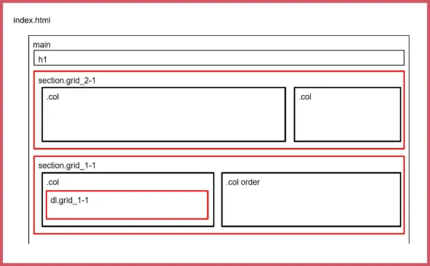
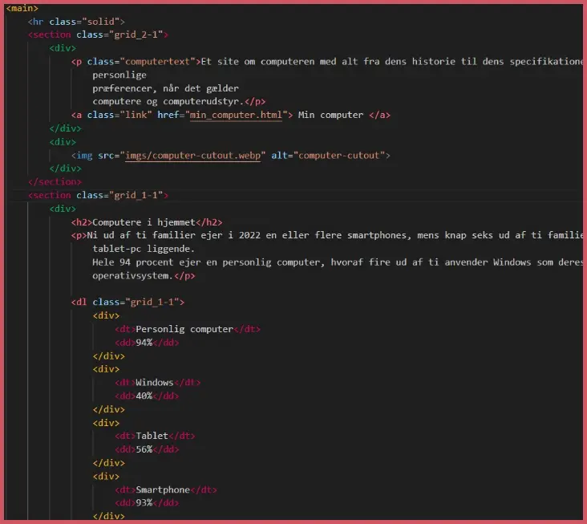

STUDIE-START
TEMA 2
Dette tema har givet mig en grundlæggende indføring til de mest anvendte redskaber i en multimediedesigners værktøjskasse.
Redskaberne har været med til at forme mit fundamentet for resten af forløbet på MMD. Jeg er blevet introduceret til grundlæggende faglige begreber inden for design af digitale brugergrænseflader, digital indholdsproduktion, digital kommunikation og responsivt webdesign.
Udover det har jeg lært at sætte websider op i html og css og fået de første hands-on færdigheder inden grafik og billedbehandling i Photoshop, opsætning af tekst og billeder i Adobe XD
BESØG SIDEN
Klik herPROCESSDOKUMENTATION
Wireframe (Udklip)
Layout diagram (Udklip)
VS CODE (Udklip)
